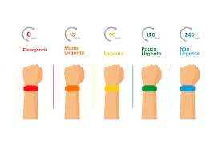

O Protocolo Manchester funciona com base em uma escala adotada pela instituição de saúde, geralmente. Assim que um paciente chega na unidade, ele deve passar por uma aferição dos sinais vitais, identificação dos sintomas e depois pela classificação de risco.
Na etapa de classificação, existem fluxogramas que ajudam a determinar a ordem de prioridade dos quadros. Para se ter uma ideia, o protocolo conta com 55 fluxogramas de decisão para orientar os profissionais da saúde na hora da identificação da gravidade em diferentes situações. A classificação é feita de acordo com as queixas e sintomas e com os principais fatores, ou seja, aqueles que impactam o tempo em que o paciente pode esperar, tais como: risco de morte, escala de dor, hemorragia, nível de consciência, temperatura, glicemia, entre outros.
Após a avaliação, o paciente recebe uma pulseira colorida de acordo com sua posição na escala de cinco níveis estabelecida pelo sistema, indicando o tempo de espera segundo a gravidade.
Cores e significados das pulseiras
Emergência: Vermelho
A pulseira vermelha é dada aos pacientes que têm risco de morte ou estão em condições de gravidade extrema e que precisam de atendimento imediato. É possível citar como exemplos os seguintes casos:- Crises convulsivas;
- Paradas cardiorespiratórias;
- Hemorragias sem controle;
- Dor no peito com falta de ar;
- Queimadura em mais de 25% do corpo;
- Tentativa de autoextermínio.
Muito urgente: Laranja
A pulseira laranja serve para indicar pacientes também em casos urgentes, porém, em um nível mais moderado que a anterior. Sendo assim, o tempo de espera nesses casos é de, no máximo, 10 minutos. Veja logo abaixo quais são algumas das condições que se aplicam:
- Dores muito severas;
- Cefaleia de rápida progressão;
- Arritmia sem sinais de instabilidade.
Já as pulseiras amarelas servem para indicar que o paciente pode correr risco, mas não imediato. Dessa forma, esses pacientes podem esperar até 1 hora para serem atendidos. Entre os casos mais comuns estão:
- Vômitos intensos;
- Desmaios;
- Crises de pânico;
- Dores moderadas;
- Sinais vitais alterados.
As pulseiras verdes servem para indicar pacientes em casos pouco urgente e que podem esperar até 2 horas. Nesse caso, é muito comum os quadros de:
- Dores leves;
- Viroses;
- Tonturas;
- Resfriados;
- Náuseas.
Por fim, as pulseiras azuis são para identificar os quadros em que não há urgência para o atendimento, onde os pacientes podem esperar até 4 horas ou serem encaminhados para o Posto de Saúde. 